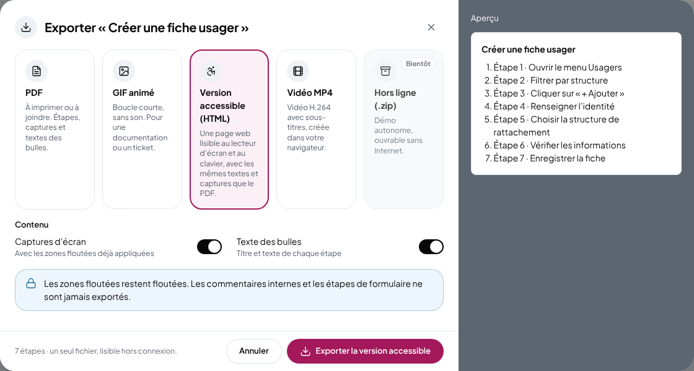

L45 : modale Exporter
Les 5 cartes de format, trop serrées (environ 130 px chacune, descriptions sur 6 à 7 lignes), deviennent une liste verticale : une ligne par format, avec l'icône, le nom, la description sur une ligne et le badge éventuel. La largeur de la modale, les options, l'encart et l'aperçu ne changent pas.
Avant
AprèsExporter « Créer une fiche usager »
Contenu
Captures d'écranAvec les zones floutées déjà appliquées
Texte des bullesTitre et texte de chaque étape
Les zones floutées restent floutées. Les commentaires internes et les étapes de formulaire ne sont jamais exportés.
7 étapes · un seul fichier, lisible hors connexion.